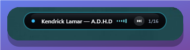
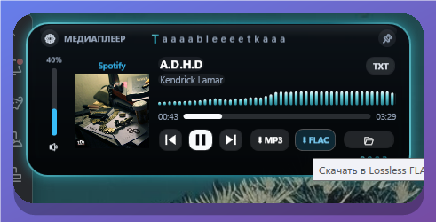

ZOOM
ZOOMКомпактные виджеты (новости, рыночные данные, быстрые действия, управление медиа), перетаскивание за края окна (edge-dragging) и аккуратное поведение поверх других окон.
Автокопирование скриншотов в буфер обмена в фоне, двухпоточная очередь загрузок и умное троттлингование фоновых модулей при играх, рендере и активной работе.
Поддержка 10 языков локализации, нативный установщик Windows (x64 Setup) и предсказуемый цикл обновлений.
Модульный Android-компаньон: привязка по QR-коду, автономные функции на телефоне и синхронизация/команды ПК через relay.699718.space.
Чёткая визуальная иерархия и быстрый вызов нужных виджетов поверх окон без перегруженных панелей и лишних кликов.
Нативный .NET 8 / WPF без «раздутых» фреймворков и умное троттлингование фоновых модулей во время игр, рендера и активной работы.
Включайте только нужные модули — без навязанных облачных аккаунтов, подписок и сложных сценариев настройки.
tabletka не ведёт поведенческую аналитику, не собирает телеметрию для профилирования и не сохраняет личные файлы, буфер обмена, скриншоты или историю действий в постоянных базах на сервере.
Основная логика, состояние виджетов и пользовательские настройки хранятся и обрабатываются локально на вашем устройстве.
При использовании синхронизации и релея трафик проходит транзитом для доставки сообщений между устройствами без записи содержимого пользовательских сессий в постоянное хранилище.
Вы сами решаете, какие модули активны, когда подключать Android-компаньон и как управлять сетевыми соединениями.
Оверлей с 16 модулями, локальным хранением настроек, DPAPI-защитой токена релея и обработчиком команд/состояний (вода, курение, таймер, pc.*).
Транзитный WebSocket/HTTP-релей за TLS/HAProxy: привязка по QR-коду, маршрутизация конвертов между устройствами без записи сессий в постоянные БД.
Модульное приложение для телефона: быстрый QR-паринг, автономные сценарии на устройстве, синхронизация воды/курения/таймера и удалённые команды ПК.
Нет. Оверлей, виджеты и локальные настройки работают автономно на Windows (.NET 8 / WPF); синхронизация с Android и релей подключаются только по желанию.
Нет. Данные обрабатываются локально, аналитика поведения для профилирования не ведётся, а через релей сообщения проходят транзитом без записи содержимого сессий в постоянные базы.
Фоновые модули снижают активность и частоту обновлений в периоды высокой нагрузки (игры, рендер, активная работа), сохраняя плавный отклик интерфейса без лишних ресурсов.
Откройте настройки tabletka на Windows, запустите привязку по QR-коду через relay.699718.space и отсканируйте код в Android-приложении — после этого станут доступны синхронизация модулей и команды ПК.